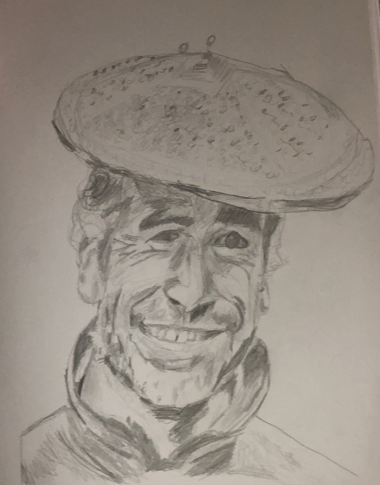
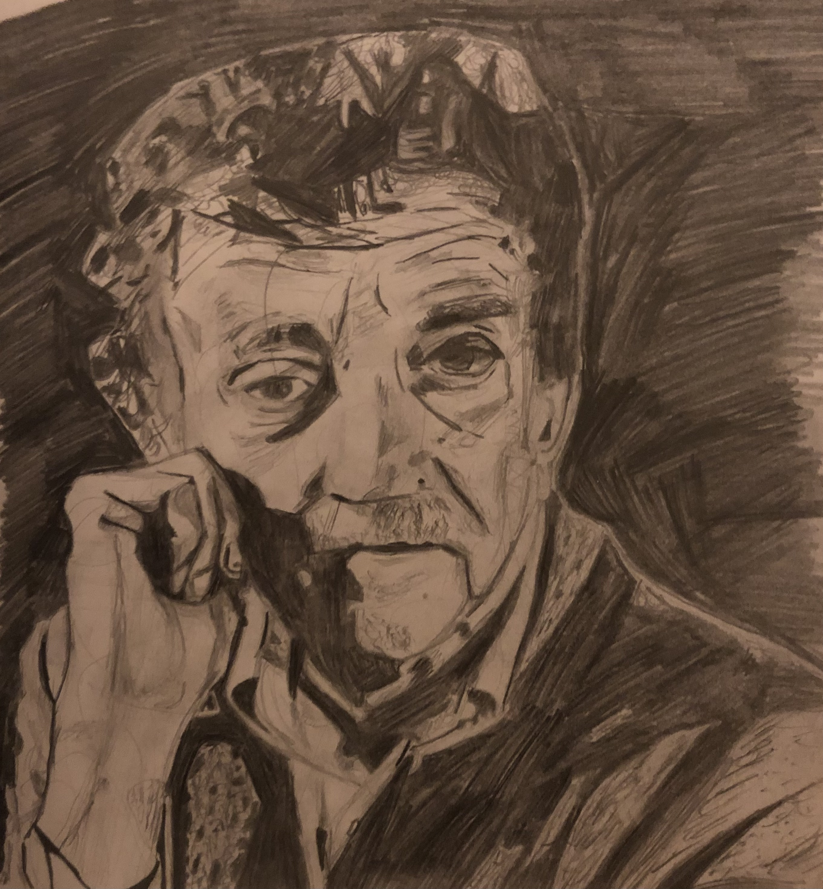
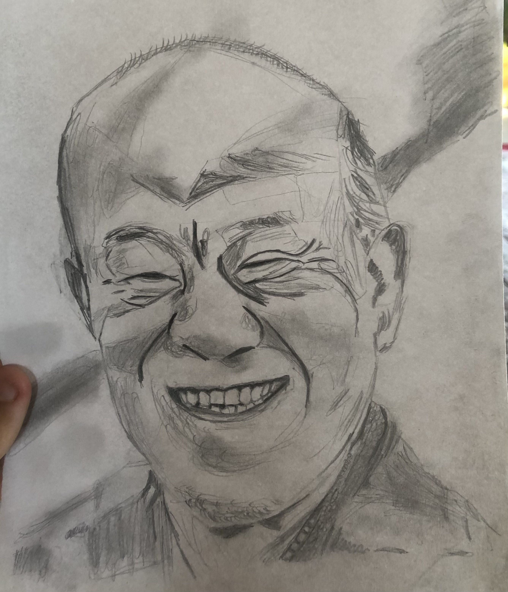
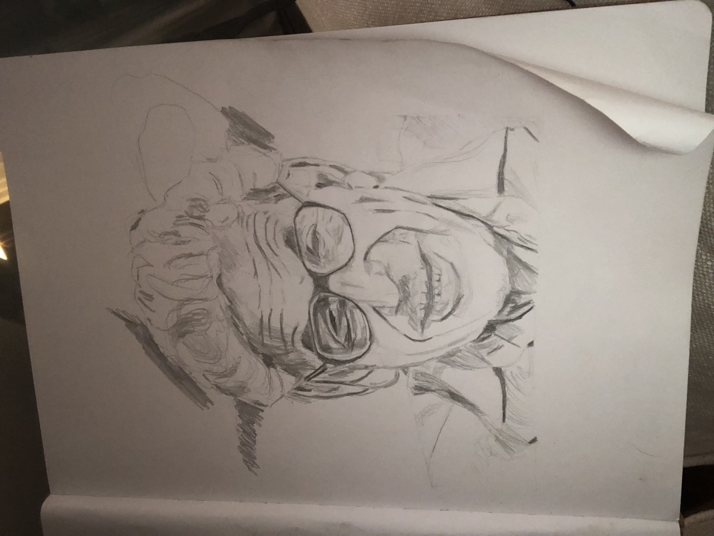
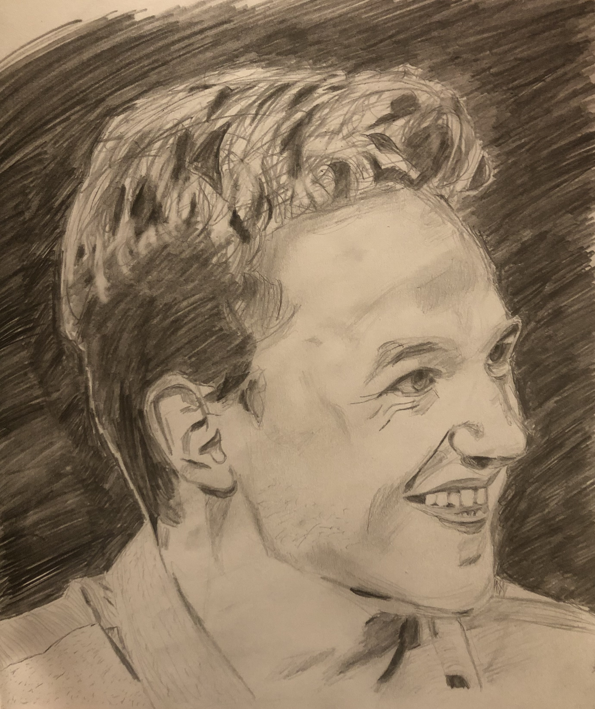
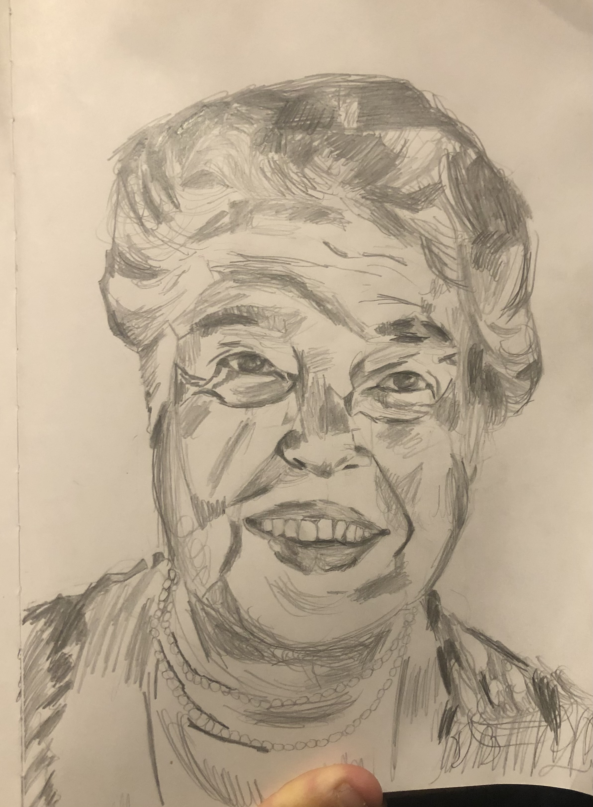
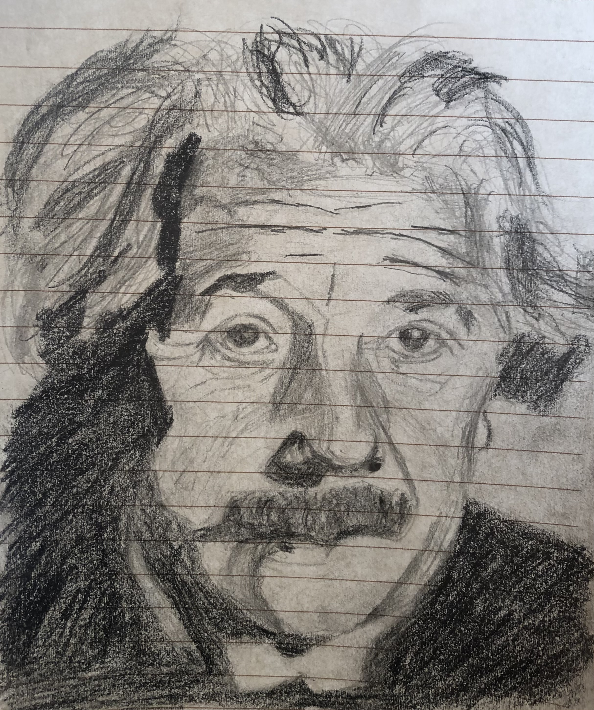
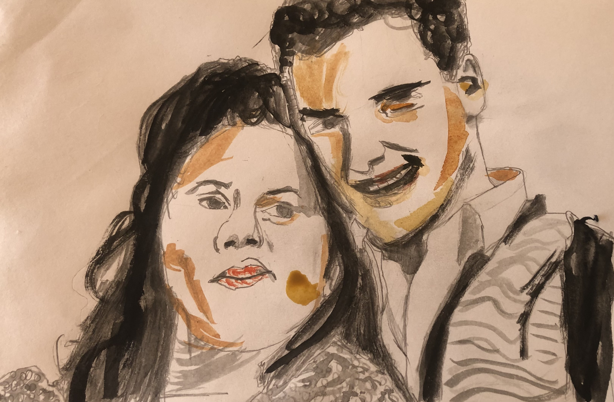
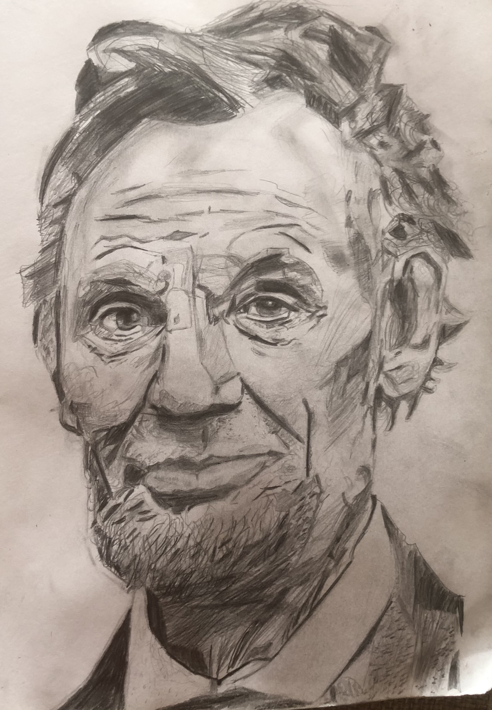

Inspiring quotes
A collection of quotes that I find really inspiring or funny or interesting.

"As I wrote about the life of Doug Tompkins, I attempted to describe this book in a
narrative that my eleven-year-old daughter, Zoe, could understand. I sought to help her,
even at that young age, understand the concept of a legacy with dignity. I told Zoe that
Doug Tompkins—whom she’d heard quite a bit about during her dad’s four-year
journey—felt that a most noble goal in life was to leave the planet “a little bit better.”
She smiled, nodded, and then asked the kind of question so natural to a child and so
poignant for an adult: “Why only a little bit better?”" Jonathan Franklin, A Wild Idea

“And I urge you to please notice when you are happy, and exclaim or murmur or think at some point, 'If this isn't nice, I don't know what is.” Kurt Vonnegut, A Man Without a Country

“In my life, I just want to make music that can make people happy and escape” Joe Hisaishi

"To communicate with Erdös you had to learn his language. "When we met," said Martin Gardner, the mathematical essayist, "his first question was `When did you arrive?' I looked at my watch, but Graham whispered to me that it was Erdös's way of asking, `When were you born?'"Paul Hoffman, The Man Who Loved Only Numbers (I really recomend reading this book! Erdos was a really unique gentle person)

Just a drawing I really like from a photo of my mom when she was young!

"And at this point it does not matter if the phyiscs is idealized, if you have a soul you have to know why!!" Grant Sanderon, TedxTalk, on number of collisions of colliding block whose mass ratio is a power of 10 writing out the digits of pi

“I have never felt that anything really mattered but the satisfaction of knowing that you stood for the things in which you believed and had done the very best you could.” Eleonor Roosevelt


"What do you care what other people think?" Arlene Feynman
"The highest forms of understanding we can achieve are laughter and human compassion" Richard Feynman, Surely your Joking Mr Feynman

“In 1908, in a wild and remote area of the North Caucasus, Leo Tolstoy, the greatest writer of the age, was the guest of a tribal chief “living far away from civilized life in the mountains.” Gathering his family and neighbors, the chief asked Tolstoy to tell stories about the famous men of history. Tolstoy told how he entertained the eager crowd for hours with tales of Alexander, Caesar, Frederick the Great, and Napoleon. When he was winding to a close, the chief stood and said, “But you have not told us a syllable about the greatest general and greatest ruler of the world. We want to know something about him. He was a hero. He spoke with a voice of thunder; he laughed like the sunrise and his deeds were strong as the rock….His name was Lincoln and the country in which he lived is called America, which is so far away that if a youth should journey to reach it he would be an old man when he arrived. Tell us of that man.” Doris Kearns Goodwin, Team of Rivals